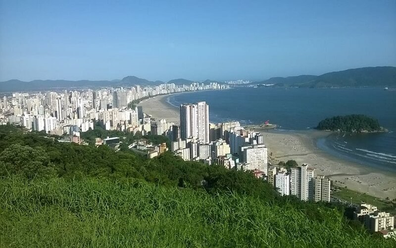
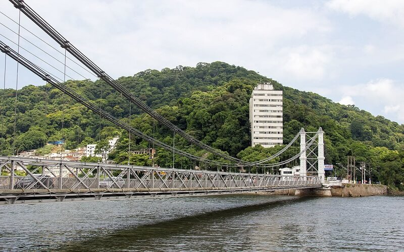

Casa Martim Afonso
A Casa Martim Afonso era uma fortaleza toda de pedra, onde o fundador Martim Afonso morou por um ano (1532/1533) deixando-a para os capitães que o sucederam. Atualmente, há uma segunda construção no local, que preserva parte da original. Uma das atrações do lugar é a primeira parede erguida em alvenaria no Brasil. A Casa de Martim Afonso é considerada Marco Zero do Brasil e fica na Praça 22 de Janeiro, 469, Centro. O horário de atendimento é de terça a domingo, das 9 às 17h.
R. Padre Manoel, 469 - Centro, São Vicente - SP, 11310-090Memorial dos 500 Anos

Uma das mais belas vistas das praias de São Vicente pode ser apreciada do Memorial dos 500 Anos, que fica no alto da Ilha Porchat. A vista do local não é o único atrativo; a plataforma projetada pelo mundialmente conhecido arquiteto Oscar Niemeyer, tem design que chama atenção por sua beleza e linhas arrojadas.
Itararé, São Vicente - SP, 11320-380Morro da Asa Delta
Descoberto pelos praticantes de vôo-livre, o Morro da Asa Delta - também chamado de Itararé ou Voturuá - tem seu ponto máximo a 180 metros de altura e proporciona uma das mais belas vistas da Baixada. Dalí é possível ter uma visão privilegiada de São Vicente, Santos, Guarujá, Praia Grande e Cubatão. O acesso é feito na Divisa com Santos, a partir da subida do Morro do José Menino. Lá funciona também o Teleférico, cuja base e venda de ingressos fica na Praia do Itararé.
(Teleférico) Av. Ayrton Senna da Silva 500 Praia Itararé São Vicente - SPCasa da Cultura Afro-Brasileira - Memorial ao Escravizado

O primeiro Museu do Escravo do litoral paulista foi reinaugurado em janeiro de 2015 com o novo conceito de Casa da Cultura Afro-Brasileira - Memorial ao Escravizado. O lugar abriga atividades relacionadas à promoção da igualdade racial junto a entidades artísticas, movimentos sociais e religiões de matrizes africanas. A Casa da Cultura mantém entre suas instalações o acervo permanente de seu idealizador, o artesão Geraldo Albertini (já falecido). Obras dele e de seus discípulos Irineu Beck e Ademir dos Santos recontam a história dos povos escravizados no Brasil, desde o início da colonização até a Lei Áurea. Criada em 13 de maio de 1976, a casa é localizada no Parque Ecológico Voturuá e remete à arquitetura dos lares mineiros do Brasil Colônia, com paredes forjadas à taipa e imagens em relevo da história do negro no País, todas pelas mãos de Albertini. As visitas têm ingresso a custo simbólico e podem ser feitas de terça a domingo, das 10 às 17h.
Rua Dona Anita Costa, Parque Ecológico Voturuá, São Vicente - SP, 11380-300Parque Ecológico Voturuá

Ótima opção de passeio é o Parque Ecológico Voturuá, que também possui o título de Zoológico Municipal (Rua Dona Anita Costa, s/nº - Vila Voturuá). No local os visitantes podem conhecer várias espécies da fauna brasileira. São mais de 100 animais divididos em 20 espécies, como aves, répteis e mamíferos. Os visitantes poderão ver leões, uma onça e um hipopótamo de três toneladas. Saguis e macacos-prego também alegram os visitadores, bem como tucanos, papagaios e araras. Com 825m² de área verde da Mata Atlântica (uma das últimas reservas dentro da zona urbana da Cidade), o parque ainda abriga um Pesque-Pague. Os visitantes contam ainda com infraestrutura de lazer, com playground para as crianças e opção de trilhas. O Parque funciona de terça a domingo, das 9 às 17h.
Avenida Dona Anita Costa S/nº - Vila Voturuá, São Vicente - SP, 11380-300Marco Padrão

Inaugurado em 1933, o monumento é o marco de comemoração dos 400 anos da Fundação de São Vicente. Encontra-se dentro de uma ilhota no mar conhecida como Pedra do Mato. Foi oferecida pela colônia portuguesa de Santos e São Vicente. Localiza-se na Praia do Gonzaguinha, próximo à Biquinha de Anchieta.
Av. Embaixador Pedro de Toledo, 649-531 - Centro, São Vicente - SP, 11320-440Ponte Pênsil
Considerado o cartão-postal número um de São Vicente, a Ponte Pênsil, foi a primeira do gênero construída no Brasil. Tombada como patrimônio histórico, a ponte foi inaugurada em 21 de maio de 1914, revelando-se fundamental no desenvolvimento da região. A ponte ainda mantém material original usado na obra, como os cabos de aço vindos da Alemanha.
Parque Bitaru, São Vicente, 11310-100Rua Japão

Inaugurada em agosto de 1998, a Praça Kotoku Iha se caracteriza como o marco da Rua Japão, que ficou conhecida como um núcleo de pescadores. A ideia de transformar o local em um recanto japonês partiu da união de São Vicente com a cidade de Naha, na Província de Okinawa, no Japão, que se tornou cidade-irmã. A área é famosa por seu portal e pedra da sorte.
R. Japão - Parque Bitaru, São Vicente - SPBiquinha

Com história desde 1553, a Biquinha de Anchieta foi uma das principais fontes de água da população de São Vicente durante séculos. Seus belos azulejos azuis - trabalhados a mão são relíquias históricas. Lá, o padre jesuíta bebia água e catequizava índios.
Praça 22 de Janeiro - Centro, São Vicente - SP, 11310-090Morro dos Barbosas

A maior bandeira do Brasil hasteada em mastro, com 630 m² e 110 quilos, está localizada no Morro dos Barbosas, em São Vicente. Ao avistá-la, o turista respira o clima de nacionalismo que esta Cidade histórica possui. Diversos pontos turísticos e construções remetem a fatos da fundação da primeira vila do País e da história daqueles que desbravaram e colonizaram o litoral brasileiro.
Morro dos Barbosas, São Vicente - SPParque Cultural Vila de São Vicente

O local reproduz a arquitetura, usos e costumes da Primeira Cidade Brasileira, colonizada por portugueses. No parque, os visitantes podem conhecer o cotidiano colonial do século XVI, em diversos espaços culturais que homenageiam importantes personagens da história vicentina e brasileira na região. Atores reproduzem o estilo da época da fundação. O Parque Cultural funciona de terça a domingo, das 10 às 20h, na Praça João Pessoa, s/nº - Centro, em frente à Igreja Matriz.
161, Praça João Pessoa, 103 - Centro, São Vicente - SP, 11310-250